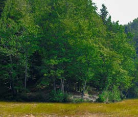
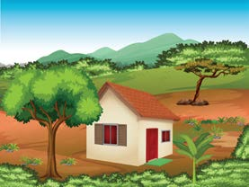

Mazingira
Mazingira ya asili
Vitu vya asili
Mazingira yaliyotengenezwa na binadamu
Vitu vilivyotengenezwa na binadamu
Kielelezo namba 2: Vipengele vya mazingira
Vitu vyote vya asili na vilivyotengenezwa na binadamu vinaweza kupatikana nyumbani, shuleni, au mahali popote.Binadamu hutegemea mazingira kufanya shughuli zake zote zinazomwezesha kuishi.Hivyo, binadamu ana wajibu wa kutunza na kuhifadhi mazingira kwa matumizi endelevu.Kielelezo namba 3 kinaonesha baadhi ya vitu vinavyopatikana katika mazingira.

(i)
(ii)
(iii)

(iv)
(v)
(vi)
Kielelezo namba 3: Baadhi ya vitu vinavyopatikana katika mazingira